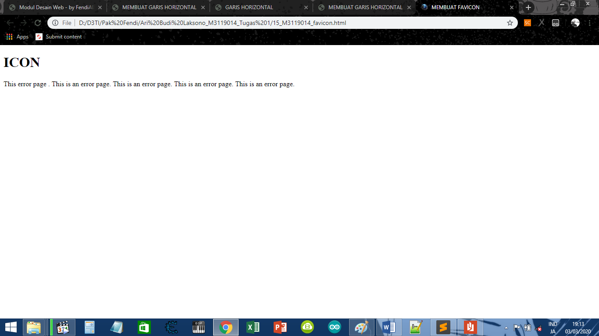

Membuat Pavicon
KODE PROGRAM
<!DOCTYPE html>
<html>
<head>
<meta charset-"UTF-8">
<title>MEMBUAT FAVICON</title>
<link rel="icon" type="image/x-icon" href="icon.ico">
</head>
<body>
<h1>ICON</h1>
<p>
This error page . This is an error page. This is an error page. This is an error page. This is an error page.
</p>
</body>
</html>
HASIL PROGRAM
ICON
This error page . This is an error page. This is an error page. This is an error page. This is an error page.
SCREENSHOT

KESIMPULAN
Dari koding di atas, Dapat disimpulkan bahwa cara membuat pavicon dengan cara menuliskan
<link rel="icon" type="image/x-icon" href="icon.ico">
Kembali Ke Halaman Utama